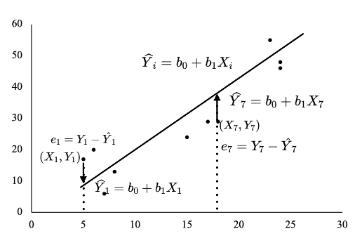
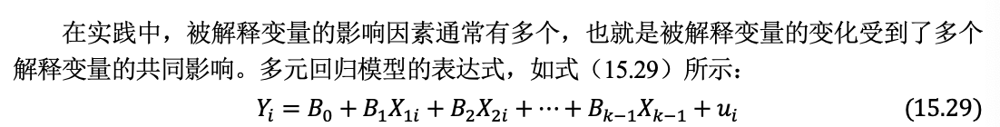

第15章 回归分析
第15章 回归分析
15.1回归分析的工作流程
15.2 一元回归分析
15.3多元回归分析
15.1回归分析的工作流程
15.1.1 建立回归模型
15.1.2 估计模型参数
15.1.3 检验模型参数
15.1.4 评估模型效果
15.1.5 提炼研究结论
15.1回归分析的工作流程
15.1.1 建立回归模型
15.1.2 估计模型参数
15.1.2 估计模型参数

15.1.2 估计模型参数
15.1.2 估计模型参数
15.1.2 估计模型参数
15.1.3 检验模型参数
15.1.4 评估模型效果
判定系数代表在被解释变量的变异中有多大比例可以被回归方程解释。
判定系数的值介于0到1之间，R^2的值越高，代表模型的拟合效果越好。
15.1.5 提炼研究结论
提炼研究结论
总结解释变量对被解释变量的影响效应
评估模型的拟合效果
15.2 一元回归分析
15.2.1 散点图中添加趋势线
15.2.2 函数工具
15.2.3 数据分析/回归工具
15.2.1 散点图中添加趋势线
15.2.2 函数工具
INTERCEPT函数
SLOPE函数
RSQ函数
STEYX函数
15.2.2 函数工具
实操技巧
INTERCEPT函数、SLOPE函数、RSQ函数和STEYX函数可以分别计算一元回归模型的截距、斜率、判定系数和回归标准误。LINEST函数可以报告回归方程的详细输出结果。
上述函数的相同之处是：第1项参数是被解释变量的数据区域，第2项参数是解释变量的数据区域。
FORECAST.LINEAR函数和TREND函数可以对给定的解释变量的值，对被解释变量进行预测。
给数据区域定义名称，可以提高公式录入效率。
15.2.3 数据分析/回归工具
15.3多元回归分析
15.3.1 多元回归方程的估计和检验
15.3.2 多元回归分析在Excel中的实现
15.3.1 多元回归方程的估计和检验
 ## 15.3.1 多元回归方程的估计和检验
::: incremental
参数的估计
单个参数的t检验
多个参数的F检验
校正的判定系数 :::
15.3.2 多元回归分析在Excel中的实现
15.3.2 多元回归分析在Excel中的实现
实操技巧
数组函数LINEST可以报告多元回归模型的详细输出结果，第1项参数是被解释变量的数据区域，第2项参数是解释变量的数据区域。
TREND函数可以计算多元回归模型的预测值。对给定的解释变量的值，对被解释变量进行预测，第1项和第2项参数分别是被解释变量和解释变量的数据区域，第3项参数是给定的解释变量的值的区域。